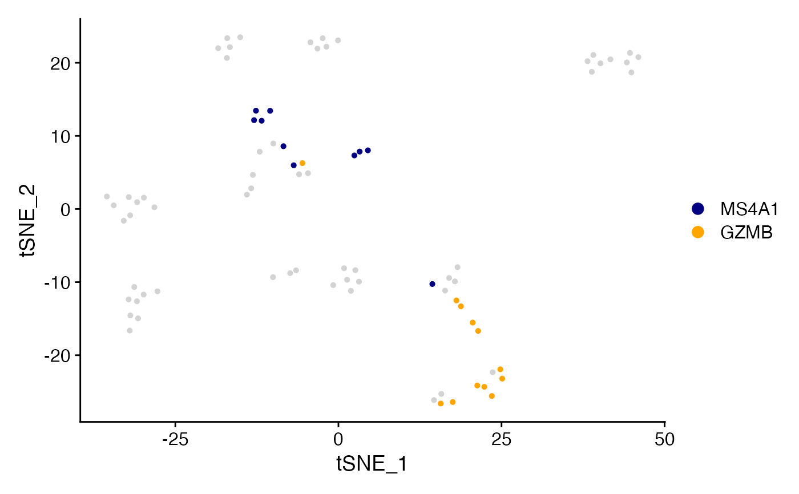

Create Plot with meta data variable of interest highlighted
Cell_Highlight_Plot(
seurat_object,
cells_highlight,
highlight_color = NULL,
background_color = "lightgray",
pt.size = NULL,
aspect_ratio = NULL,
figure_plot = FALSE,
raster = NULL,
raster.dpi = c(512, 512),
label = FALSE,
split.by = NULL,
split_seurat = FALSE,
reduction = NULL,
ggplot_default_colors = FALSE,
...
)Seurat object name.
Cell names to highlight in named list.
Color to highlight cells.
non-highlighted cell colors (default is "lightgray")..
point size for both highlighted cluster and background.
Control the aspect ratio (y:x axes ratio length). Must be numeric value; Default is NULL.
logical. Whether to remove the axes and plot with legend on left of plot denoting
axes labels. (Default is FALSE). Requires split_seurat = TRUE.
Convert points to raster format. Default is NULL which will rasterize by default if greater than 200,000 cells.
Pixel resolution for rasterized plots, passed to geom_scattermore(). Default is c(512, 512).
Whether to label the highlighted meta data variable(s). Default is FALSE.
Variable in @meta.data to split the plot by.
logical. Whether or not to display split plots like Seurat (shared y axis) or as individual plots in layout. Default is FALSE.
Dimensionality Reduction to use (if NULL then defaults to Object default).
logical. If highlight_color = NULL, Whether or not to return plot
using default ggplot2 "hue" palette instead of default "polychrome" or "varibow" palettes.
Extra parameters passed toDimPlot.
A ggplot object
library(Seurat)
# Creating example non-overlapping vectors of cells
MS4A1 <- WhichCells(object = pbmc_small, expression = MS4A1 > 4)
GZMB <- WhichCells(object = pbmc_small, expression = GZMB > 4)
# Format as named list
cells <- list("MS4A1" = MS4A1,
"GZMB" = GZMB)
Cell_Highlight_Plot(seurat_object = pbmc_small, cells_highlight = cells)
